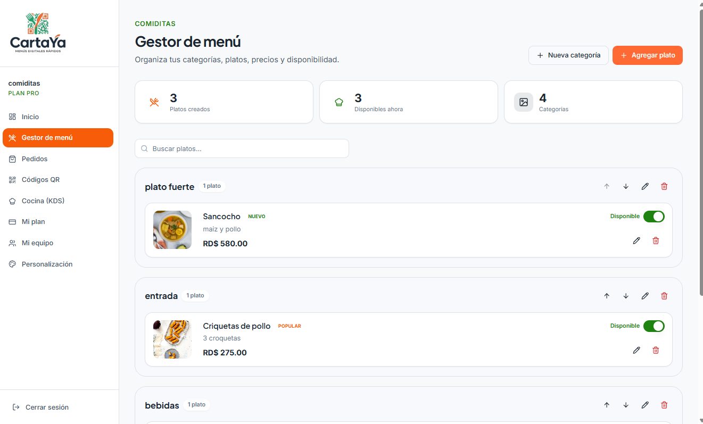
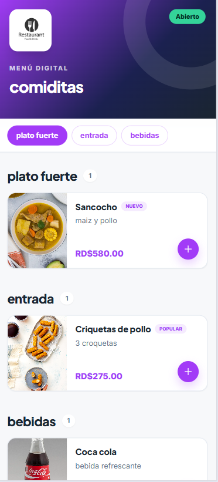
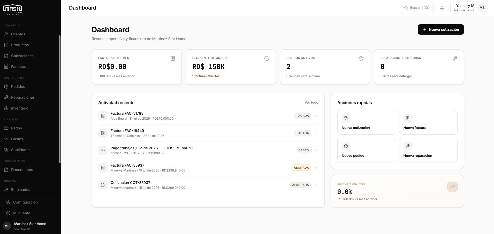
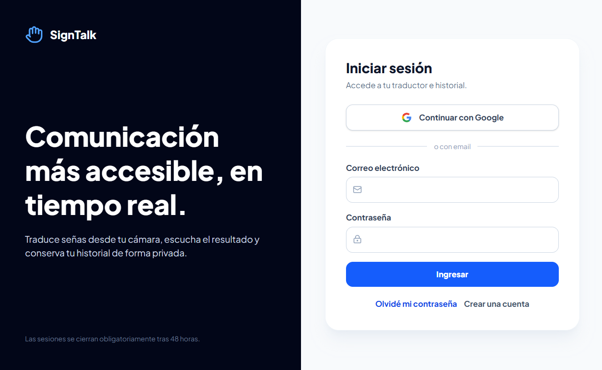
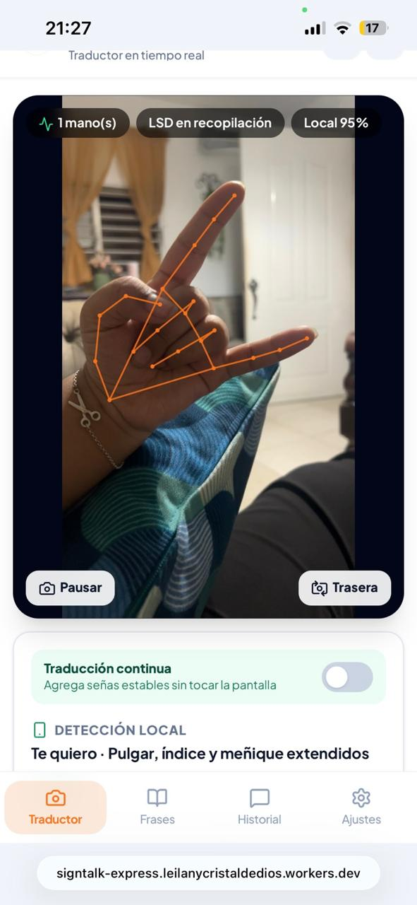
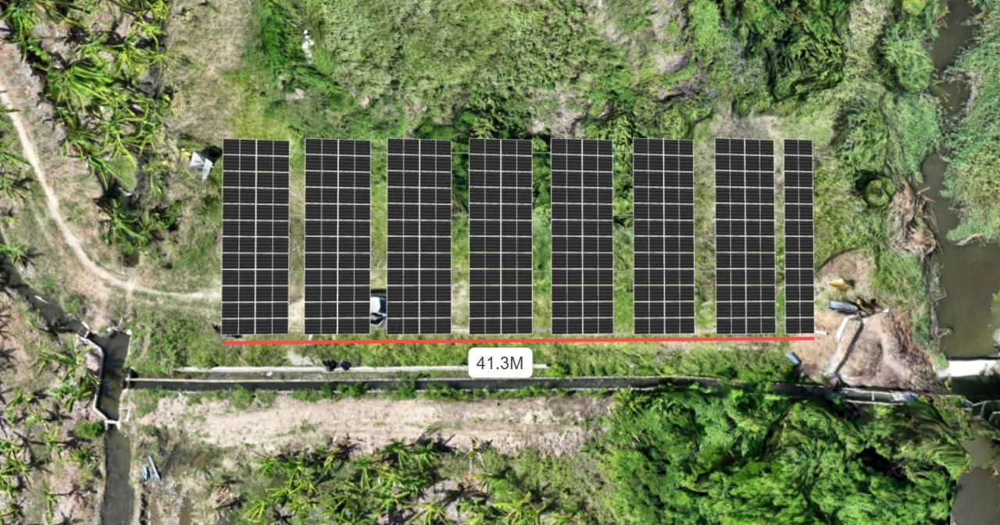
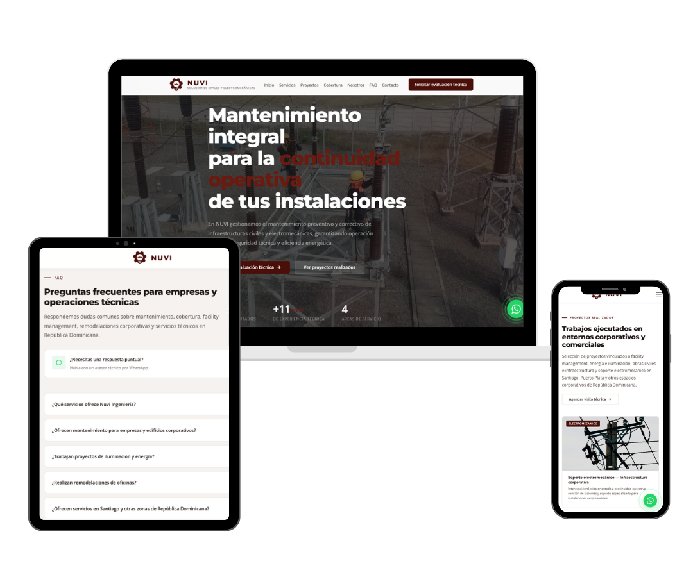

01
SaaS & Web Applications
Productos multi-tenant, portales y aplicaciones con una experiencia coherente desde la arquitectura hasta el último estado de interfaz.
- Arquitectura de producto
- UX & design systems
- Cloud & APIs
MORÁN STUDIO · REPÚBLICA DOMINICANA
Diseñamos e implementamos productos SaaS, plataformas ERP, experiencias web y soluciones 3D fotovoltaicas con precisión técnica y sensibilidad visual.

Soy Leilany Morán, desarrolladora y diseñadora dominicana. Morán Studio nace de unir dos formas de pensar que para mí nunca debieron estar separadas: la lógica de un sistema sólido y la sensibilidad de una experiencia bien diseñada.
No construyo productos para llenar un portafolio. Me involucro en el problema, entiendo la operación y convierto esa complejidad en herramientas claras, útiles y visualmente cuidadas.
Desde un producto digital hasta un entorno físico modelado: cada decisión parte del contexto real y termina en una solución que se puede usar, medir y hacer crecer.
Productos multi-tenant, portales y aplicaciones con una experiencia coherente desde la arquitectura hasta el último estado de interfaz.
Sistemas a medida para convertir procesos dispersos en una operación trazable: inventario, producción, finanzas y decisiones.
Levantamientos, fotogrametría y modelado técnico para validar instalaciones fotovoltaicas dentro de su contexto espacial.
Software, accesibilidad e ingeniería espacial. Cuatro proyectos distintos unidos por el mismo principio: que la tecnología se sienta clara.
Desliza para explorar los proyectos →


PRODUCTO REALPlataforma multi-tenant para restaurantes con menú digital, pedidos, cocina, códigos QR, equipos y personalización.

SISTEMA OPERATIVOERP para centralizar el ciclo comercial, inventario, operación y control financiero de manufactura.


DETECCIÓN LOCALTraductor de lengua de señas con visión por computadora, audio e historial privado.

Levantamiento aéreo, disposición de módulos y validación espacial para diseño fotovoltaico.
Una selección de páginas desarrolladas para negocios que necesitaban comunicar mejor y verse a la altura de su trabajo.
Desliza para ver más trabajos →
 Ver sitio ↗
Ver sitio ↗Mobiliario exterior · Catálogo digital
 Ver sitio ↗
Ver sitio ↗Salud dental · Experiencia de marca
 Ver sitio ↗
Ver sitio ↗Energía · Presencia corporativa
 Ver sitio ↗
Ver sitio ↗Alimentos · Marca y conversión

Ver sitio ↗Ingeniería eléctrica · Confianza técnica
El stack cambia según el problema. La intención se mantiene: elegir tecnología útil, mantenible y apropiada para cada producto.
El proceso es técnico, pero nunca impersonal. Trabajamos con claridad, entregables visibles y decisiones explicadas.
Objetivos, usuarios, operación y restricciones reales.
Arquitectura, flujos y prototipos antes de construir.
Implementación por capas, integraciones y control de calidad.
Despliegue, documentación y siguientes mejoras.
Responde tres preguntas. Al final prepararé un mensaje con tu contexto para que podamos empezar la conversación sin formularios eternos.
Tu mensaje incluirá las respuestas para que podamos ir directo a lo importante.
Hablar con Leilany ↗Cuéntame dónde estás, qué necesitas resolver y qué resultado buscas. Te responderé personalmente con próximos pasos claros.